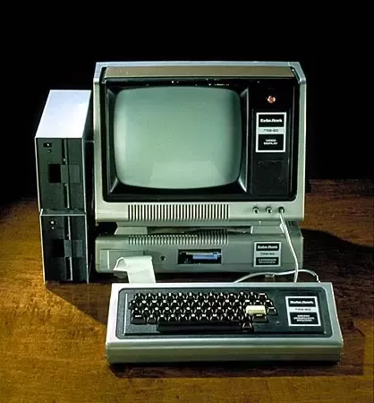

Computing Platforms
A computing platform or digital platform is an environment in which a piece of software is executed. It may be the hardware or the operating system (OS), even a web browser and associated application programming interfaces, or other underlying software, as long as the program code is executed with it.
What are the different types of computing platform?
- Mainframe Computers
- Minicomputers
- Personal Computers
Mainframe Computers
Mainframes are computers. At their core, mainframes are high-performance computers with large amounts of memory and processors that process billions of simple calculations and transactions in real time.
Minicomputers

minicomputer, computer that was smaller, less expensive, and less powerful than a mainframe or supercomputer but more expensive and more powerful than a personal computer. Minicomputers were used for scientific and engineering computations, business transaction processing, file handling, and database management.
Personal Computer

A personal computer (PC) is a microcomputer designed for use by one person at a time. Prior to the PC, computers were designed for -- and only affordable for -- companies that attached terminals for multiple users to a single large mainframe computer whose resources were shared among all users.